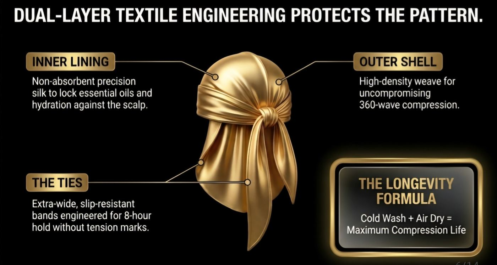

7 Loc Care Mistakes That Quietly Ruin Good Locs
Locs rarely die from one dramatic event. They thin, dry, and dull from small habits repeated for months — which is good news, because habits can be changed the day you identify them. Nique's Oasis (@niquesoasis) teaches the positive maintenance habits in the video below; this guide names the seven mistakes those habits protect against, so you can audit your own routine honestly.
Mistakes 1–3: Too much, too heavy, too damp
One: over-retwisting. Retwisting too often, or too tightly, thins locs at the root — the damage shows up months later as weak, skinny bases that cannot support the length. Space maintenance properly and keep tension gentle. Two: heavy products. Waxes, thick butters, and heavy gels build up inside the loc where no rinse fully reaches; the loc gets heavier, duller, and dirtier from the inside. Light, rinse-clean products only.
Three: tying up damp locs. Locs put away wet — into a cap, a style, or a pillow — stay damp at the core and develop the sour smell that no perfume fixes. Dry fully before coverage, every time, no matter how late the wash ran.
Mistakes 4–5: Neglect dressed as freedom
Four: sleeping unprotected. 'Freeform' describes a locking method, not a care exemption — cotton friction fuzzes, dries, and lint-loads locs nightly. Satin coverage is for every loc type. Five: never separating. Roots left unseparated marry into webs and mats that eventually force cutting or painful ripping. Twenty seconds of separating at night prevents the whole category.
Six belongs here too: ignoring the scalp. Locs get the attention while the scalp underneath goes unwashed, unoiled, and unexamined — then flakes, itching, and irritation get blamed on the locs. Wash the scalp like it matters, because the locs are growing out of it.
Mistake 7: Comparing your locs to a different journey
Seven: judging your locs against someone else's timeline, texture, and method. Locs mature at the speed of your hair, your method, and your habits — comparing month six of your journey to year six of a stranger's is a reliable way to abandon a healthy routine for a damaging shortcut.
Audit the first six mistakes, fix the ones you recognise, and let your locs be on their own schedule. The locs that turn heads at year five belong to people who did the boring things — protection, light products, full drying, patient maintenance — for five years straight.
An eighth, quieter mistake deserves an honourable mention: changing everything at once. When something looks off, adjust one habit, wait a month, and read the result. Locs respond slowly, and the wearer who experiments in single variables actually learns what their hair wants — the one who overhauls the routine monthly learns nothing except anxiety.
Watch: 7 tips for maintaining your own locs from Nique's Oasis — the positive habits that replace these mistakes
Video: “7 Tips for Dreadlock Care! Maintaining your OWN locs” by Nique's Oasis (@niquesoasis) · Watch on YouTube
Shop the gear
Everything in this guide runs on the right gear: a durag that holds compression without slipping, a cap that stays put, and fabric that treats your hair right. The durag.store launch lineup is built to that standard — dual-layer construction, long tails, and stitching made to survive the routine. Join the launch list and use code GOLDSTANDARD for 15% off your first order.
Keep learning
- Double Durags for Long Locs: Containing Length Without Crushing It — Intermediate · Locs & Dreadlock Care
- Dreadlock Caps: The Complete Guide to Sleeping and Living in Locs — Intermediate · Locs & Dreadlock Care
- Sleeping With Starter Locs: Protecting Baby Locs Through the Fragile Months — Basic · Locs & Dreadlock Care
Sources: Video — “7 Tips for Dreadlock Care! Maintaining your OWN locs” by Nique's Oasis (@niquesoasis), youtube.com. Guide written by the durag.store Wave Lab.